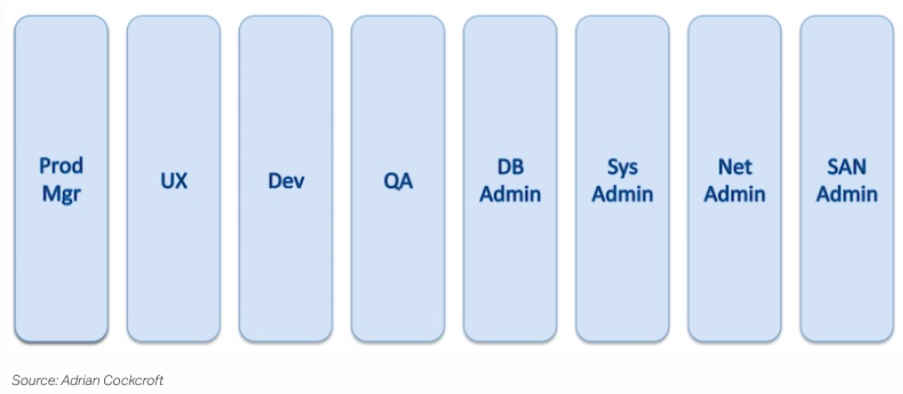
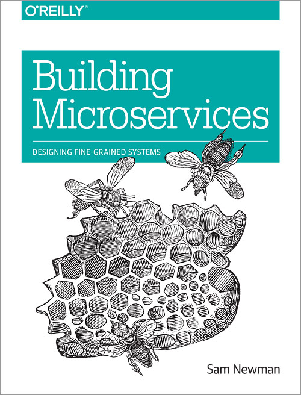
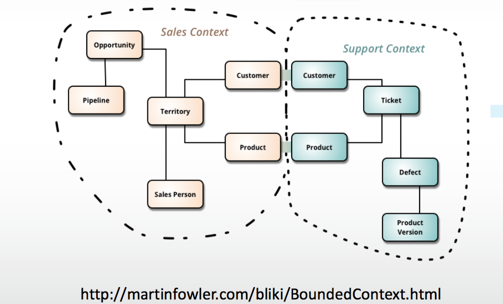
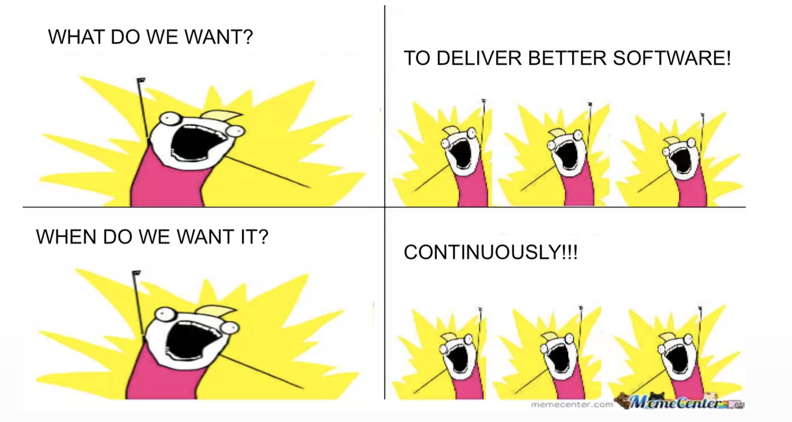
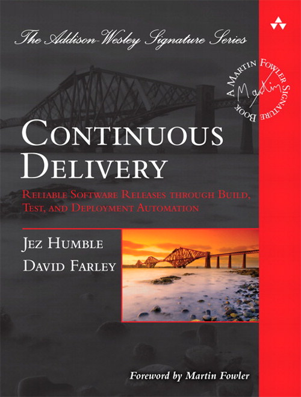

全栈是什么
- "JS一统前后端开发就是全栈"
- "说自己全栈的都是搞前端的"
- "先扛30kg服务器上机架再说全栈"
- "全栈? CPU和编译器都没整过吧"
即使不算上搬机器和写编译器
也是不可能"全栈"的
- Karpov和Kasparov的业余爱好
- 技术栈本身从Web2.0到如今的变化
- 哪怕仅仅是前端...
全栈的缘起
A full-stack web developer is someone who has honed skills in both front-end web design/development and back-end/server coding.
You can count on a full-stack web developer to design, code, implement and maintain a fully functional modern interactive website on his/her own (not just a static website with a few pages).
-- Carlos Bueno, Facebook
不断的修正
It means a person who can work with databases, servers, systems engineering, and client work.
Depending on what kind of client is needed that can mean a mobile stack, web stack, or native applications.
Basically when people are asking for a full-stack programmer they're looking for the all-singing, all-dancing technical wizard.
Or at least someone who won't complain too much when asked to do some work outside their normal comfort zone.
--Ian Peters-Campbell on Quora
全栈实例:pdf生成服务
需要：
- 了解各种PDF生成的方案的Pros&Cons
- 了解各种调用场景的需求
- 帮助其他人接入和使用服务
不需要：
- 写很多代码
全栈实例:apk文件上传和解析
- 后端开发
- 前端开发
- 自动化测试
- 运维、监控和容量规划
全栈实例:运维
- Jenkins的build怎么挂了！
- 主页打不开了！
- Confluence建不了空间了！
全栈实例:需求
- PO: 我们服务器是不是要支持stream？
- DEV: 为什么需要?
- PO: 我们需要放音频和视频
- DEV: 在哪里有这个场景?
- PO: 玩家反馈要支持视频和音频的反馈
- DEV: 手机上?玩家能有多长时间的反馈？
- PO: 一般每个反馈几秒吧
- DEV: 那就直接下载文件到手机播放就是了
全栈实例:系统
兼容性测试平台
- 帮助用户接入
- 手机状态维护
- 测试用例录制回放技术
- 测试结果回传处理
- 运维和监控、容量规划
全栈要素:人
- 责任心：CDN式的工程师
- 求知欲：学习意愿
- 持续创新：不断优化现有流程和技术
- 理解业务：有大局观和洞察力的战术大师
PDF报告又有新需求了!

- 设计要改: 艳丽来做!
- 后台要改: 蔡旭来做!
- 前台要改: 章伟来做!
- 测试要测: 媛媛来做!
- 部署方式要改: 谁来做?
微服务如何做？
- 小，且专注于一件事情
- 独立进程中
- 轻量级的通信机制
- 松耦合，可独立测试和部署

微服务如何做？
基于Bounded Context划分服务

微服务如何做？
- 选谁下手？Most painful but easily splits
- 以场景动作进行服务提取
- 围绕抽取出的服务建设团队
微服务不是银弹
- 遵守康威定律
- 不是每个公司都是Netflix或者淘宝
- 文化先行：文化的建设比技术建设慢
Ask yourself first...
- 为啥不是一个Library?
- 到底有多少团队会使用这个服务?
- 谁来负责更新文档？通知服务使用方API变更？
- 谁来负责部署服务？谁来负责监控服务？
- Good Design is Imperfect Design
全栈要素: 敏捷
- 代码的每个提交有充分review?
- 代码的每个提交有充分自测?
- 熄灯前所有的代码都已经提交?

全栈要素: DevOps
- 团队需要具备必要的测试和运维技能
- DevOps需要工具来支撑，Tools not Solutions
- 增强沟通也是提高效率的重要组成部分

总结
- 全栈其实主要是个人的意识形态和组织的体系结构
- 沟通是至关重要的技能:记得Bounded Context
- 持续学习，实践敏捷和掌握工具：让团队先全栈
- 全栈意味着个人愿意承担全部责任，从CDN工程师做起
Q & A?
Thank You!
git@gitlab.testbird.io:lenciel/reveal-slides.git